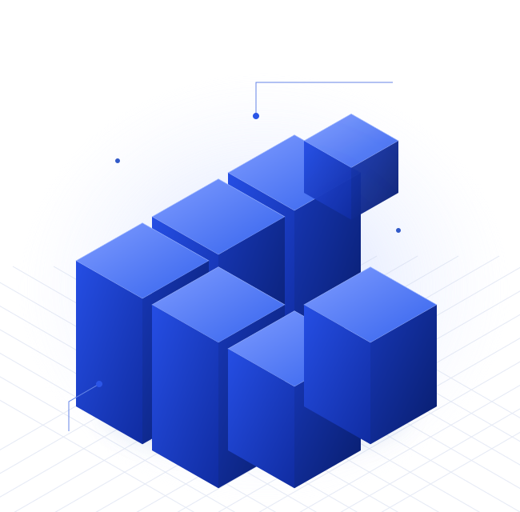

B2BEaDSuporte
Engenharia educacional
EaDSuporte
Moodle, plugins e integrações sob medida para operações que precisam ir além do padrão.
OperaçãoConectamos tecnologia, educação e pessoas para desenvolver negócios e abrir novos caminhos.

CONEXÕES QUE CONSTROEMINFRAESTRUTURADa infraestrutura que sustenta uma plataforma ao conhecimento que transforma uma comunidade, cada iniciativa tem seu lugar.
Engenharia especializada, infraestrutura digital e sustentação para operações educacionais e corporativas.
↗Moodle, plugins e integrações sob medida para operações que precisam ir além do padrão.
OperaçãoInfraestrutura Moodle e serviços educacionais com presença internacional e foco em escala.
OperaçãoEducação e inovação para qualificar servidores e aproximar cidadãos da transformação digital.
Iniciativa do portfólioCombinamos infraestrutura digital, engenharia de software e desenvolvimento de negócios para transformar conhecimento em soluções para diferentes mercados.
Entenda como atuamosEducação, inclusão produtiva, comunidades e cidades. Conheça as frentes de impacto que orientam o nosso ecossistema.
Conheça nossa visão de impactoConhecimento, tecnologia e boas conexões para construir o que vem a seguir.